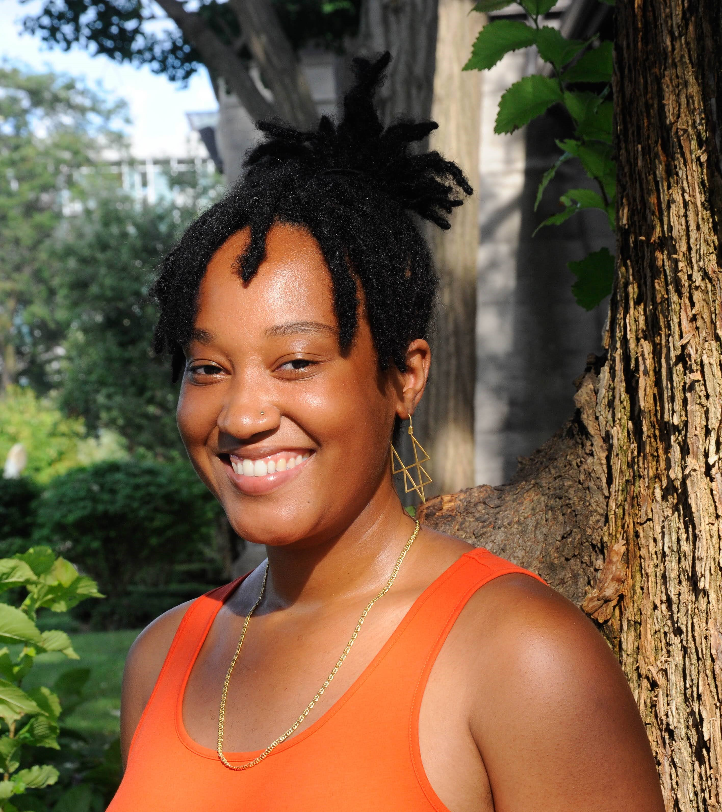

about the project
The Maplibs Project is a living atlas of the spaces that make our
neighborhood feel like a community. The project does more than catalog
these sites of community. Stretching conventional notions of maps and
mapping, it draws on the sensory dimension of space to explore what
community feels like for you. The Maplibs project is a front porch for
neighborhood memory, experience and imagination. You can play the word
game here. You can also leave a voicemail or
text your answers to 312-869-2584. If you are interested in learning
more or creating the next edition of the word game about your
neighborhood, you can reach her by
email. Thank you to
space-makers, space-keepers and everyone who shared their videos of
spaces for us all to connect to in this online portal.
about the artist

Chandra Christmas-Rouse is an urban planner and interdisciplinary
artist. A background in community development and environmental
justice informs her design approach of working with communities in a
participatory process to achieve place-based solutions and reimagine
systems. Her art practice is about visualizing the maps that we make
everyday with our sacred memories, cultural traditions and radical
dreams. Her most recent work entitled, “Race, Space and the Poetics of
Planning: Toward a Black Feminist Space-Making Practice,” explores
Black women creative practitioners in Chicago and how their
space-making practices vigorously reworks the meaning and significance
of urban space in ways that carry broader implications for urban
planning and development in Chicago through research, writing,
diagrams and video collage. She currently is a
2020 Threewalls RaDLab+Outside the Walls.
She earned a BA in Environmental Sciences and Policy with distinction
from Duke University and an MA in Urban Planning from the Harvard
University Graduate School of Design.